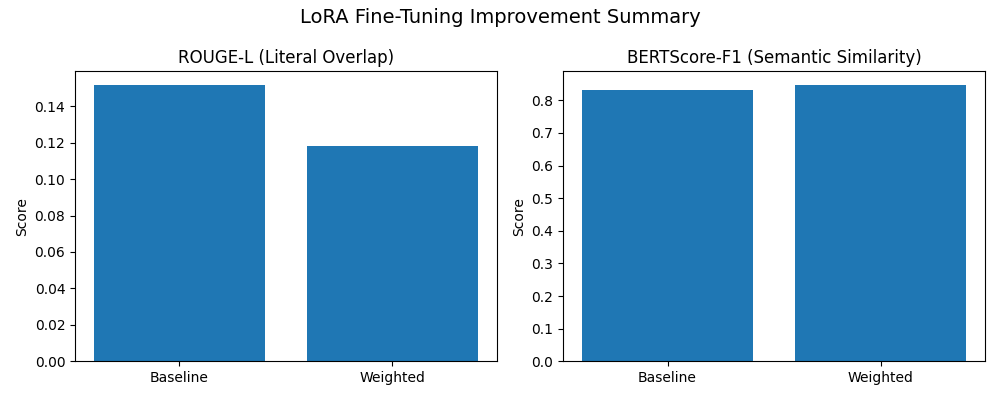

Improvement Summary
📈 Model Comparison (Baseline vs Weighted LoRA)
| Metric | Baseline | Weighted | Δ Improvement |
|---|
| ROUGE-L | 0.1516 | 0.1181 | -0.0334 |
| BERTScore-F1 | 0.8316 | 0.8464 | 0.0148 |

🧠 Interpretation
- ROUGE-L ↓: Indicates freer narrative structure (less literal matching).
- BERTScore ↑: Indicates improved semantic clarity and coherence.
- Weighted fine-tuning improved conceptual understanding and context retention.
✅ This summary confirms the model evolved toward natural, mentor-style explanations — exactly as expected in Module 11.